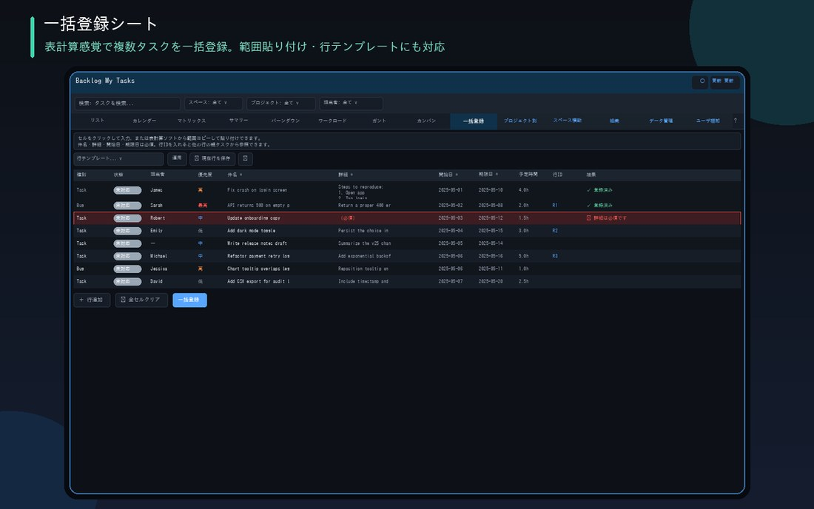

Excel처럼 붙여넣어 신규 작업을 일괄 등록할 수 있을 뿐만 아니라, 기한일로 검색한 기존 작업의 일괄 업데이트나 Excel 파일 다운로드・가져오기에도 대응하고 있습니다.

표계산 소프트에서 범위를 복사해 셀에 붙여넣기만 하면 됩니다. 행 ID로 부모-자식 연결도 일괄로, 행 템플릿・CSV 가져오기로 정형 등록도 효율화
기간・담당자를 지정해 검색한 기존 작업을 시트에 불러와, 실제로 변경한 항목만 모아서 Backlog에 반영
불러온 후 다른 사람이 같은 작업을 업데이트하지 않았는지 확인합니다. "강제 업데이트" "최신 불러오기" 중 하나로 해결을 선택할 수 있습니다
종류・담당자 등의 열은 Excel에서도 실제 드롭다운으로 선택 가능. 편집 후에는 드롭존에 드래그&드롭으로 가져올 수 있고, Backlog 반영은 마지막 확인 후에